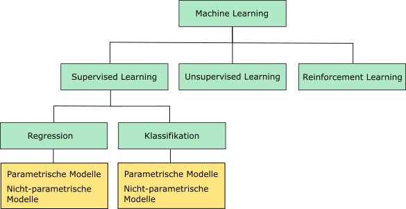
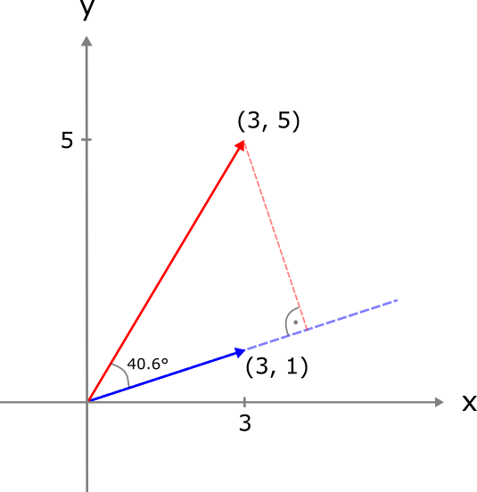
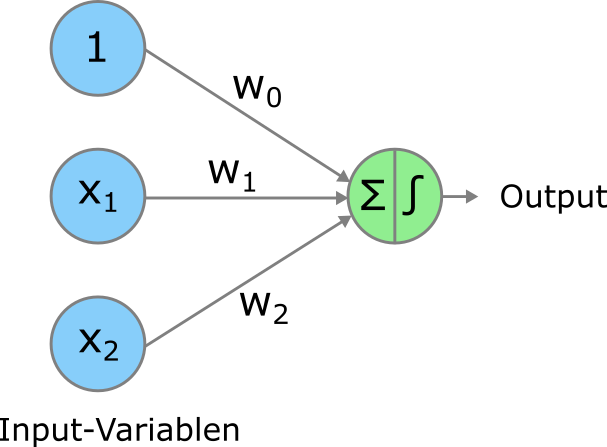
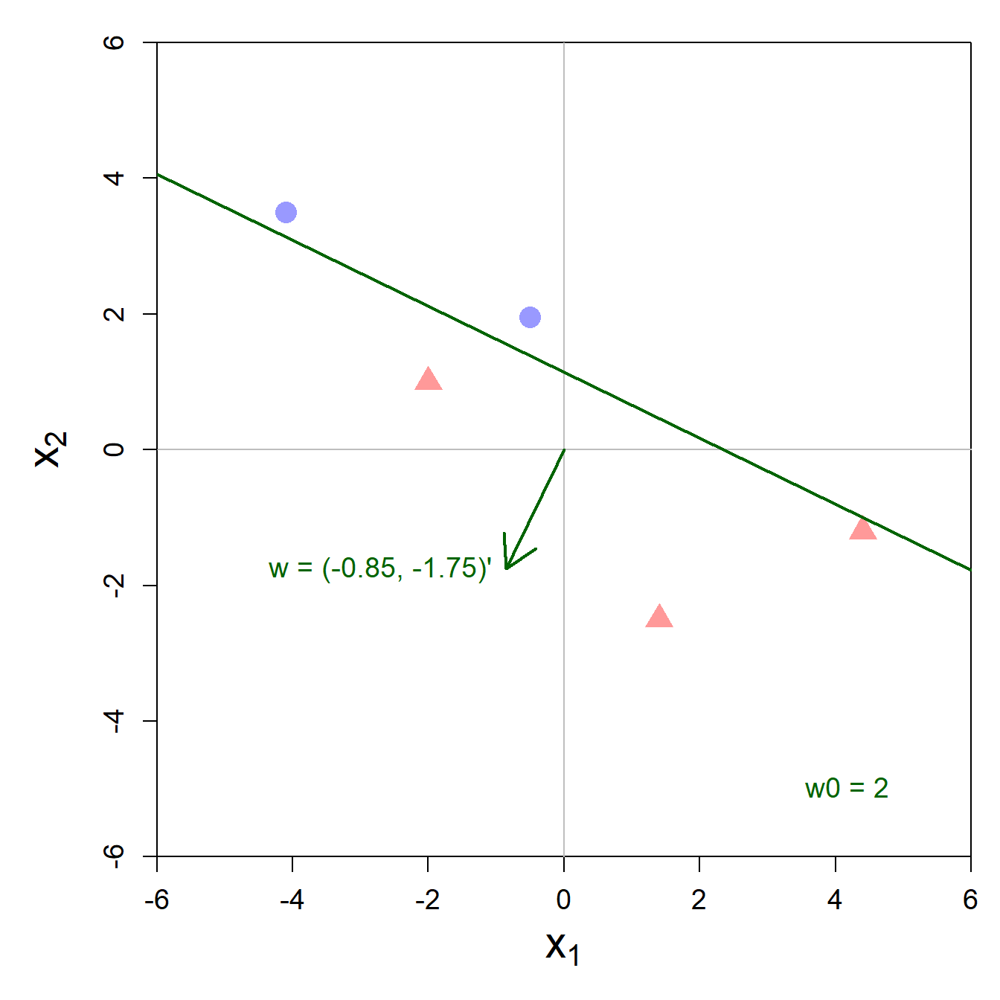

x1 x2 x3 x4 y1 y2 y3 y4
1 10 10 10 8 8.04 9.14 7.46 6.58
2 8 8 8 8 6.95 8.14 6.77 5.76
3 13 13 13 8 7.58 8.74 12.74 7.71
4 9 9 9 8 8.81 8.77 7.11 8.84
5 11 11 11 8 8.33 9.26 7.81 8.47
6 14 14 14 8 9.96 8.10 8.84 7.04
7 6 6 6 8 7.24 6.13 6.08 5.25
8 4 4 4 19 4.26 3.10 5.39 12.50
9 12 12 12 8 10.84 9.13 8.15 5.56
10 7 7 7 8 4.82 7.26 6.42 7.91
11 5 5 5 8 5.68 4.74 5.73 6.891 Einführung
In diesem Kapitel geht es darum zu verstehen, was Machine Learning überhaupt ist, warum es nützlich sein kann und was typische Anwendungsfälle von ML sind. Wir werden ausserdem verschiedene Unterkategorien von ML kennen lernen und uns eine kleine Taxonomie erarbeiten. Zum Schluss schauen wir uns den ersten ganz wichtigen Meilenstein im ML an: das Perceptron. Dabei lernen wir auch gleich ein paar wichtige mathematische Grundlagen kennen.
1.1 Was ist Machine Learning? Eine kurze Geschichte und Definitionen.
Im Prinzip geht die Geschichte des MLs weit zurück, nämlich zu den Anfängen der Statistik. Viele Modelle, die heutzutage im ML angewendet werden sind nämlich eigentlich von Statistiker:innen erfundene Modelle. Die Geschichte des MLs und der Statistik sind darum eng miteinander verknüpft. Einen eigentlichen Startpunkt des MLs könnte man vielleicht in den 1950er Jahren ausmachen. Einerseits fand 1956 das sagenumwobene Dartmouth Summer Research Project on Artificial Intelligence1 statt, an dem alle wichtigen Grössen aus dem Gebiet zu dieser Zeit teilnahmen. Der Begriff Artificial Intelligence wurde an diesem Anlass erstmal erwähnt. Andererseits hat Frank Rosenblatt2 ein Jahr später das sogenannte Perceptron und einen dazugehörigen Lernalgorithmus eingeführt (dazu später mehr).
Danach blieb es aber rund 20 Jahre relativ ruhig bis die Forschung im Bereich Machine Learning so richtig Fahrt aufnahm. Der Hauptgrund dafür war, dass das Perceptron nur für linear separierbare Probleme (auch hierzu später mehr) funktionierte und darum das Interesse daran bald abflachte.
Ein grosser Schub für die Entwicklung von ML ging vom Aufkommen von extrem grossen Datenmengen (Big Data) und dem Internet aus. Das führte nämlich dazu, dass sich immer mehr Leute aus den Fachbereichen Informatik und Computer Science mit dem Thema ML befassten und effiziente Hard- und Software sowie algorithmische Kniffs und Tricks beisteuerten. Ausserdem ermöglichte das Internet den Zugang zu gewaltigen Datenmengen an Bildern, Videos, Klicks, etc. - denken Sie beispielsweise nur schon an die Informationen, die jede:r von uns tagtäglich im Internet hinterlässt. Diese Entwicklungen führten unter anderem zur Entwicklung der ImageNet Challenge3, welche die Entwicklungen im Bereich Computer Vision (maschinelles Sehen) katalysierten.
Ein weiterer Schub für das Machine Learning war (und ist) zudem die immer besser werdende Rechenleistung von Computern, insbesondere der Grafikkarten (engl. Graphics Processing Units oder GPUs), welche für schnelle Matrix- und Vektoroperationen verwendet werden können. All diese Entwicklungen haben sich im November 2022 kulminiert in der erstmaligen breiten öffentlichen Wahrnehmung von sogenannten Large Language Models wie ChatGPT.
Nachdem wir einen ersten groben Überblick über die Geschichte des MLs erhalten haben, wollen wir uns nun überlegen, was ML denn genau ist. Wie der Name sagt, geht es im Machine Learning darum, dass eine Maschine (oder präziser, ein Computer) aus einem gegebenen Datensatz automatisch Muster lernt, ohne dass ein Mensch dem Computer (explizit) sagen muss, was er lernen soll. Der Mensch gibt jedoch dem Computer die Rahmenbedingungen für das automatische Lernen vor.
Die erlernten Muster sind selbstverständlich nur nützlich, wenn sie genereller Natur sind und auch zukünftigen Beobachtungen zugrunde liegen. Beispiel: ein Spital hat während der Corona Pandemie ein Modell trainiert, um den täglichen Pflegebedarf je nach Wochentag, Saison, und weiteren Indikatoren vorherzusagen. Das Modell funktioniert nun nach der Pandemie aber nicht wunschgemäss und prognostiziert in der Tendenz einen zu hohen Pflegebedarf. Das Problem ist, dass die erlernten Muster nicht gut auf eine Zeit nach der Pandemie generalisierbar sind. Mit anderen Worten: die Trainingsdaten waren nicht repräsentativ genug. ML-Modelle sollen also generell gültige Muster in den Daten erlernen.
Bevor wir etwas konkreter anschauen, wie genau ein Computer automatisch aus Daten lernen kann, schauen wir uns die Definitionen von zwei Experten im Gebiet ML an:
HinweisDefinitionen
“[Machine Learning is the] field of study that gives computers the ability to learn without being explicitly programmed.” Arthur Samuel, 1959 (zitiert in Géron 2022, p. 4)
“Machine Learning is the science (and art) of programming computers so they can learn from data.” Aurélien Géron (Géron 2022, p. 4)
Zusammenfassend lässt sich sagen, dass wir mit ML dem Computer die Möglichkeit geben, automatisch und selbständig aus Daten generalisierbare Muster zu lernen. Nichtsdestotrotz braucht es Sie als ML-Expert:in, und zwar wie folgt:
- Bevor wir ML verwenden können, um Muster in Daten zu lernen, müssen wir uns für ein konkretes Modell entscheiden. ML Modelle können unterschiedlich flexibel sein und es liegt im Ermessen von Ihnen, wie flexibel das Modell sein soll. Sie müssen bei der Wahl des Modells die Komplexität des Problems berücksichtigen. Grundsätzliche gilt bei der Wahl des Modells, dass flexiblere Modelle komplexere Sachverhalte abbilden können. Ein zu flexibles Modell kann aber schnell zu Overfitting führen, doch dazu später mehr. Dieser erste Schritt wird im Fachjargon typischerweise Modellwahl (engl. Model Selection) genannt.
- Sobald Sie das Modell ausgewählt haben, übergeben Sie dem Computer (etwas vereinfacht gesagt) das Modell, einen Datensatz sowie einen Lernalgorithmus. Nun hat der Computer alle Zutaten, um automatisch zu lernen. Doch was lernt er eigentlich? Der Computer lernt die Parameter Ihres gewählten Modells, so dass das Modell sich optimal an die Daten anpasst. Dieser Schritt wird im Fachjargon Modelltraining (engl. Model Training oder Model Fitting) genannt.
- Falls Sie mit dem erlernten Modell zufrieden sind, können Sie es nun entweder dazu verwenden Vorhersagen zu machen oder um Zusammenhänge in den Daten zu interpretieren und daraus wertvolle Einsichten gewinnen. Dieser Schritt wird im Fachjargon als Modellinferenz (engl. Model Inference) zusammengefasst. Typischerweise sind Sie in der Realität mit dem ersten erlernten Modell allerdings noch nicht zufrieden und gehen zurück zu Schritt 1 und wählen ein anderes Modell.
Es handelt sich bei dieser Vorgehensweise um eine sehr allgemeine Beschreibung des ML Prozesses. Wie diese drei Schritte konkret funktionieren, werden Sie in den nachfolgenden Kapiteln dieses Buchs erfahren.
1.2 Wann macht es Sinn ML einzusetzen?
Ein ML Modell zu trainieren (zweiter Schritt oben) kann viel Zeit und Geld kosten. Zum Beispiel müssen Sie unter Umständen überhaupt erst die Daten sammeln (oder von einem Datendienstleister kaufen), um ein Modell trainieren zu können. Oder das Projekt ist so komplex, dass Sie als Analyst:in unzählige Stunden benötigen, um die Daten überhaupt erst in eine Form zu bringen, die es erlaubt ein Modell zu trainieren. Für neuartige DL Modelle oder Generative KI kann das Trainieren eines Modells durch den reinen Stromverbrauch bzw. die vom Cloud-Betreiber in Rechnung gestellten Kosten so hoch sein, dass sich Ihr ursprüngliches Vorhaben nicht mehr lohnt. Es ist also ungemein wichtig, dass Sie sich vor Projektbeginn gut überlegen, ob ML für Ihr vorliegendes Problem überhaupt Sinn macht und einen Mehrwert generieren kann.
Folgende Daumenregeln (siehe auch Géron 2022, p. 7) können Ihnen dabei helfen, zu entscheiden, ob ML für Ihr Projekt Sinn macht:
- Ihr Problem entspricht einem standard ML-Problem, das bereits mehrfach gelöst wurde und für das es sogenannte “off-the-shelf” Lösungen gibt. Beispiel: Sie wollen das Sentiment (positive vs. negative Grundhaltung) von Social Media Posts über Ihr Unternehmen automatisch klassifizieren. Dazu gibt es viele vortrainierte Modelle, die teilweise open-source sind und frei verwendet werden können.
- Der manuelle Arbeitsaufwand ist sehr gross, wenn das Problem durch Menschen gelöst werden soll. Das Problem ist aber ansonsten klar strukturiert und benötigt keinen grossen kognitiven Einsatz eines Menschen. Beispiel: In den Post-Verteilzentren werden die von Hand geschriebenen Postleitzahlen (PLZ) bzw. Adressen problemlos von ML Modellen erkannt und die Briefe und Pakete entsprechend sortiert.
- Komplexe Probleme, in denen ein Mensch keinen Überblick hat, weil so grosse und komplexe Datenmengen vorhanden sind. Wir Menschen haben grosse Mühe damit, in Rohdaten (reinen Datentabellen) irgendwelche Muster zu erkennen. In diesem Fall können wir entweder versuchen, die Daten zu visualisieren oder mithilfe von ML Zusammenhänge zu lernen, die wir sonst nicht erkennen könnten.
Ein illustratives Beispiel für den dritten Fall ist das Anscombe Quartett4, das vier kleine Stichproben mit jeweils elf Datenpunkten enthält. Jeder Datenpunkt wird durch eine \(x\) und eine \(y\) Variable beschrieben. Die vier \(x\)- sowie die vier \(y\)-Variablen haben identische Mittelwerte:
Selbst in diesem kleinen Datensatz ist es für uns Menschen äusserst schwierig, irgendwelche Muster zu erkennen. Erst eine einfache Visualisierung der vier Stichproben mithilfe eines Streudiagramms zeigt die Muster sowie die Unterschiede zwischen den vier Stichproben deutlich auf:

1.3 Anwendungsfälle von ML
In diesem Abschnitt stelle ich erfolgreiche Anwendungsfälle von ML vor. Einige davon treffen Sie womöglich tagtäglich in Ihrem Alltag an:
- Spam Filter sind ein frühes Beispiel einer erfolgreichen Anwendung von ML. Ein Modell entscheidet dabei automatisch aufgrund der Inhalte einer Email, des Betreffs sowie des Absenders, ob es sich um eine Spam oder eine sogenannte Ham Email (unproblematische Email) handelt. Falls Sie gängige Email Software verwenden, dann arbeitet im Hintergrund ein Spam Filter daran, Sie vor lästigen Emails zu schützen.
- Ein grosser Teil des wirtschaftlichen Erfolgs von Google basiert auf der Idee, dass aufgrund der Suchhistorie hervorgesagt werden kann, welche Nutzerin oder welcher Nutzer mit welcher Wahrscheinlichkeit eine bestimmte Werbung anklickt. Dies erlaubt Google für jede Nutzer:in die Werbung mit den höchsten “Erfolgschancen” zu schalten. Da jeder Klick Einnahmen generiert, ist es für das Geschäftsmodell von Google entscheidend, dass möglichst viele Klicks stattfinden.
- Ein grosser Bereich des MLs und speziell des DLs befasst sich mit Computer Vision. Dabei geht es darum, das Hauptmotiv von Bildern zu klassifizieren (z.B. zeigt ein Bild ein Tier oder einen Menschen?), Objekte in Bildern zu entdecken (z.B. enthält das Bild eine Person?) und das entdeckte Objekt dann auch zu klassifizieren (z.B. handelt es sich bei der Person um XY?). Als konkreteres Beispiel können Sie sich einen Industriebetrieb vorstellen, welcher ein Computer Vision Modell einsetzen möchte, um den Abnützungsgrad der von ihnen produzierten Werkzeuge automatisch zu erkennen und den Kundinnen und Kunden den optimalen Ersatzzeitpunkt für das Werkzeug vorhersagen zu können.
- Ähnlich wie im vorherigen Beispiel gibt es bereits viele Anwendungen im öffentlichen Verkehr, in denen es um Predictive Maintenance geht. Z.B. kann der optimale Wartungszeitpunkt für eine Weiche oder einen Gleisabschnitt aufgrund einer Vielzahl an Indikatoren und Messungen vorhergesagt werden.
- Ein grosses Einsatzgebiet für ML ergibt sich im Finanzsektor durch das automatische Erkennen von potentiell betrügerischen Transaktionen. Falls Sie auch schon mal eine Kreditkartentransaktion direkt am Telefon einer Kundenberaterin oder einem Kundenberater bestätigen mussten, dann ist es wahrscheinlich, dass Ihre Transaktion von einem ML System zur manuellen Überprüfung geflaggt wurde. In diesem Zusammenhang spricht man manchmal auch vom Erkennen von Anomalien (engl. Anomaly Detection).
- Sogenannte Recommender Systems sind insbesondere in Online Verkaufspunkten von grossem Nutzen. Betreiben Sie beispielsweise einen grossen Onlinehandel, dann wollen Sie Ihren Kundinnen und Kunden Produkte zum Kauf vorschlagen. Dazu verwenden Sie ein Modell, das basierend auf der Ähnlichkeit zwischen Kundinnen und Kunden potentiell interessante Produkte vorschlägt.
- Die rasanten Entwicklungen im Bereich Natural Language Processing (NLP) in den letzten 10 Jahren haben viele neue und interessante Anwendungsgebiete zutage gefördert. Zum Beispiel eignen sich Large Language Models (LLMs) als erste Anlaufstelle für Kundinnen und Kunden (automatisierter Kundenservice). LLMs werden vermutlich aber auch immer mehr in internen Prozessen in Unternehmen eingesetzt, z.B. um komplexe Dokumente zusammenzufassen oder Sitzungsprotokolle zu erstellen.
Die obige Liste ist bei weitem nicht komplett und die Entwicklungen im Bereich ML sind aktuell so rasant, dass jeden Tag eine grosse Zahl von neuen ML-basierten Produkten und Dienstleistungen auf den Markt kommen.
1.4 Supervised vs. Unsupervised Learning
Den Unterschied zwischen dem Supervised Learning und dem Unsupervised Learning können wir am besten erklären, indem wir uns mit ein paar mathematischen Grundlagen des Machine Learnings befassen. Keine Sorge, diese Grundlagen sind sehr einfach, aber versuchen Sie, diese bereits gut zu verstehen, denn wir bauen später darauf auf.
Im Supervised Learning haben wir einerseits sogenannte Input-Daten und andererseits einen Output, den wir vorhersagen wollen. Für die Input-Daten gibt es ganz viele verschiedene Begriffe, die synonym verwendet werden: z.B. Features, unabhängige Variablen, Attribute, Prädiktoren. Dasselbe gilt für den Output, hier gibt es folgende Synonyme: Zielvariable, abhängige Variable, Label, oder auch einfach \(y\). Unsere Konvention hier ist aber folgende: es gibt Input-Daten (oder Input-Variablen) und einen Output (oder Output-Variable). Im Unsupervised Learning haben wir lediglich Input-Daten und keinen Output, doch dazu später etwas mehr. Wir formalisieren erstmal die Konzepte Input-Daten und Output.
1.4.1 Input-Daten
Die Input-Daten für eine Beobachtung \(i\) schreiben wir mathematisch wie folgt:
\[ \mathbf{x}_i=\begin{pmatrix} x_{i1} \\ x_{i2} \\ \vdots \\ x_{ip} \end{pmatrix}, \] Diese Notation bedarf ein paar Erklärungen:
- Den Index \(i\) brauchen wir, um die verschiedenen Beobachtungen zu kennzeichnen. \(i\) kann eine Ganzzahl zwischen \(1\) und \(n\) annehmen, wobei \(n\) die Anzahl Beobachtungen im Datensatz bezeichnet. Wenn wir zum Beispiel etwas über die Input-Daten der dritten Beobachtung sagen wollen, dann können wir die Notation \(\mathbf{x}_3\) verwenden.
- Für jede Beobachtung \(i\) haben wir insgesamt \(p\) Variablen, welche die verschiedenen Attribute einer Beobachtung enthalten. \(x_{i1}\) bezeichnet also die erste Variable der i-ten Beobachtung, \(x_{i2}\) die zweite Variable der i-ten Beobachtung und \(x_{ip}\) die p-te (letzte) Variable der i-ten Beobachtung.
- Was Sie oben sehen, ist \(\mathbf{x}_i\) aus mathematischer Sicht ein Spaltenvektor. Mit diesem Spaltenvektor können wir die Input-Daten einer Beobachtung kompakt darstellen können.
\(\mathbf{x}_i\) bezeichnet nur die beobachteten Input-Variablenwerte für die i-te Beobachtung. Wenn wir die beobachteten Input-Variablenwerte aller \(n\) Beobachtungen kompakt darstellen möchten, dann können wir das mit einer Matrix tun. Dazu müssen wir die Input-Variablen für jede Beobachtung \(i\) zeilenweise in einer Matrix anordnen:
\[ \mathbf{X} = \begin{pmatrix} x_{11} & x_{12} & \cdots & x_{1p}\\ x_{21} & x_{22} & \cdots & x_{2p}\\ \vdots & \cdots & \ddots & \vdots\\ x_{n1} & x_{n2} & \cdots & x_{np}\\ \end{pmatrix} \]
Die erste Zeile enthält die Input-Variablen für die erste Beobachtung, die zweite Zeile die Input-Variablen für die zweite Beobachtung, usw.
1.4.2 Output
Neben den Input-Daten haben wir im Supervised Learning aber wie erwähnt auch einen Output und den bezeichnen wir üblicherweise mit \(y_i\). Auch hier hilft uns der Index \(i\) dabei, die Beobachtungen eindeutig zu kennzeichnen. In den meisten Fällen ist \(y_i\) ein sogenannter Skalar, also einfach eine Zahl. Darum schreiben wir es nicht in fetter Schrift wie oben, denn diese ist meist für Vektoren oder Matrizen reserviert.
Auch hier können wir die Outputwerte aller \(n\) Beobachtungen kompakt zusammenfassen und zwar als Vektor
\[ \mathbf{y}=\begin{pmatrix} y_{1} \\ y_{2} \\ \vdots \\ y_{n} \end{pmatrix}. \]
Frage
Stellen Sie sich vor, wir versuchen mithilfe eines Datensatzes von 5000 getätigten Kreditkartentransaktionen ein Modell zu trainieren, das vorhersagen kann, ob es sich bei einer gegebenen Transaktion um eine betrügerische Transaktion handelt oder nicht. Jede Transaktion in Ihrem Datensatz entspricht einer Beobachtung \(i\). Der Output \(y_i\) in diesem Beispiel ist eine kategorische Variable, die wir als \(y_i \in \{0,\;1\}\) beschreiben können, wobei 0 keinen Betrug und 1 Betrug bezeichnet. Ausserdem haben Sie folgende Input-Daten:
\[ \mathbf{x}_i=\begin{pmatrix} \text{Transaktionsbetrag} \\ \text{Land des Zahlungsempfaengers} \\ \text{Zeitstempel der Transaktion} \end{pmatrix} \] Welche Werte nehmen in diesem Beispiel \(n\) und \(p\) an?
- \(n = 100,\ p = 3\)
- \(n = 5000,\ p = 3\)
- \(n = 3,\ p = 5000\)
- \(n = 100,\ p = 4\)
TippLösung
Die richtige Antwort ist b.
Wir haben \(n = 5000\) Beobachtungen und \(p = 3\) Variablen.
Die \(n\) Beobachtungen, die für das Training eines Modells zur Verfügung stehen werden meist Trainingsdaten oder Trainingset genannt.
1.4.3 Taxonomie des Machine Learnings
Beim Supervised Learning geht es um ML Probleme, in denen sowohl Input-Daten als auch ein Output vorhanden ist. Ziel beim Supervised Learning ist es, ein Modell zu trainieren, das basierend auf den Input-Daten möglichst gute Vorhersagen für den Output macht. Es geht also hier um Vorhersageprobleme. In einem gewissen Sinn ist der Output die überwachende Instanz (engl. Supervisor), welche den Lernprozess des Modells kontrolliert.
Etwas formaler und mit einem probabilistischen Hut auf kann man Supervised Learning auch wie folgt beschreiben: wir nehmen an, dass die vorliegenden Daten \((\mathbf{X},\,\mathbf{y})\) gezogen wurden aus einer wahren, aber unbekannten Verteilung, die wir als \(P(\mathbf{X},\,\mathbf{y})\) beschreiben. Im Supervised Learning geht es nun darum diese gemeinsame Verteilung \(P(\mathbf{X},\,\mathbf{y})\) mithilfe der vorliegenden Daten möglichst gut zu schätzen. Wählen wir ein Modell, das diese gemeinsame Wahrscheinlichkeit direkt modelliert, dann sprechen wir von einem generativen Modell. Oft versucht man sich jedoch das Leben einfacher zu machen, indem man \(P(\mathbf{y}\mid\mathbf{X})\) modelliert. In diesem Fall spricht man von diskriminativen Modellen. Wir werden in späteren Kapiteln auf diese Unterscheidung zurückkommen. Wichtig: fast jedes Modell macht irgendwelche vereinfachenden Annahmen, um entweder ein generatives oder ein diskriminatives Modell zu rechnen.
Frage
Was passiert, wenn \(\mathbf{X}\) und \(\mathbf{y}\) (statistisch) unabhängig sind? Macht es Sinn, in diesem Fall ein Modell aus dem Supervised Learning zu lernen?
TippLösung
Wenn \(\mathbf{X}\) und \(\mathbf{y}\) (statistisch) unabhängig sind, dann kann die gemeinsame Wahrscheinlichkeit (Verteilung) geschrieben werden als \(P(\mathbf{X},\,\mathbf{y}) = P(\mathbf{X}) \cdot P(\mathbf{y})\).
Die bedingte Wahrscheinlichkeit \(P(\mathbf{y}\mid\mathbf{X})\) ist in diesem Fall: \[ P(\mathbf{y}\mid\mathbf{X}) = \frac{P(\mathbf{X},\,\mathbf{y})}{P(\mathbf{X})} = \frac{P(\mathbf{X}) \cdot P(\mathbf{y})}{P(\mathbf{X})} = P(\mathbf{y}) \]
Das bedeutet, dass wir aus \(\mathbf{X}\) nichts über \(\mathbf{y}\) lernen können und Supervised Learning in diesem Fall keinen Sinn macht.
Im Gegensatz zum Supervised Learning haben wir im Unsupervised Learning nur Input-Daten und keinen Output. Im Unsupervised Learning geht es darum, aus den Input-Daten interessante Muster zu lernen, welche für bessere unternehmerische Entscheidungen verwendet werden können. Ein einfaches Beispiel ist das Clustering von Kundinnen und Kunden eines Unternehmens in ähnliche Kundengruppen, so dass die verschiedenen Kundengruppen gezielter mit Marketingaktionen angesprochen werden können. Techniken, um komplexe Datensätze zu visualisieren, werden typischerweise auch zum Unsupervised Learning gezählt. Im Unsupervised Learning geht es darum, Modelle für \(P(\mathbf{X})\) zu finden und zu rechnen.
Etwas vereinfacht gesagt, sind ein grosser Teil der Modelle, die wir der Generativen KI zusprechen, nichts anderes als Modelle, die \(P(\mathbf{X})\) so gut wie möglich zu beschreiben versuchen. \(\mathbf{X}\) kann man sich als grosse Menge Text oder eine grosse Anzahl von Bildern vorstellen. Wenn wir nun also Text von einem LLM generieren lassen, dann ist das im Grunde nichts anderes als aus der gelernten Verteilung, die \(P(\mathbf{X})\) approximiert, zu samplen.
Neben dem Supervised und dem Unsupervised Learning gibt es noch eine dritte Kategorie von Machine Learning, nämlich das Reinforcement Learning (RL). Dieser Kategorie gehören Modelle an, die (virtuelle) Agenten so trainieren, dass sie langfristig möglichst optimal handeln. Das bisher bekannteste Beispiel aus dem RL ist Googles AlphaGo Agent, welcher den menschlichen Go Weltmeister im Jahr 2017 schlug.5. Reinforcement Learning ist aber auch eine wichtige Komponente in der Optimierung von grossen Sprachmodellen wie ChatGPT. In einer ersten Fassung dieses Buchs werden wir uns nicht (oder nur am Rande) mit RL befassen.
Die Unterscheidung zwischen den drei Arten von Machine Learning ist im oberen Teil der Abbildung 1.1 visualisiert:

1.5 Regression vs. Klassifikation
In der Kategorie des Supervised Learnings unterscheiden wir weiter zwischen Regressions- und Klassifikationsproblemen (siehe auch Abbildung 1.1).
Beim Regressionsproblem ist der Output eine stetige Variable (Intervall- oder Verhältnisskalierung), d.h. die Variable enthält reelle (numerische) Werte. Mathematisch schreibt man dies als \(y_i \in \mathbb{R}\), wobei \(\mathbb{R}\) die Menge der reellen Zahlen beschreibt.
Beim Klassifikationsproblem ist der Output bzw. die Zielvariable eine kategorische Variable (Nominal- oder Ordinalskalierung). Mathematisch schreibt man dies als \(y_i \in \{1, \dots, C\}\), wobei \(C\) die Anzahl Kategorien beschreibt. Wenn wir nur \(C=2\) Kategorien haben wie im Beispiel oben mit \(y_i \in \{0, 1\}\), sprechen wir von einem binären Klassifikationsproblem. Falls \(C>2\) sprechen wir vom mehrklassigen (engl. multiclass) Klassifikationsproblem.
Frage
Welche der folgenden Probleme sind Regressionsprobleme?
- Vorhersage des Lohns der/des Leiter:in eines Unternehmens basierend auf Profit, Marktkapitalisation, Anzahl Mitarbeitender, sowie Sektor, in dem das Unternehmen tätig ist.
- Basierend auf der aktuellen Marktlage und weiteren wirtschaftlichen Aspekten wollen Sie den morgigen Preis einer bestimmten Aktie vorhersagen.
- Vorhersage ob eine Person, welche ein bestimmtes Youtube Video schauen will, volljährig ist oder nicht.
- Eine Bank möchte mithilfe von historischen Daten vorhersagen, ob ein bestimmter Kunde zahlungsunfähig wird oder nicht.
- Ein Detailhandelsunternehmen möchte vorhersagen, ob eine Kundin ein Produkt aus der Kategorie A, B, C, oder kein Produkt kauft.
- Vorhersage von Hauspreisen basierend auf Attributen wie der Grösse, Anzahl Zimmer, Seeblick (ja/nein), Steuerlast, etc.
- Ein Unternehmen lanciert ein neues Produkt und schätzt anhand von Konkurrenzprodukten, ob das eigene Produkt ein Erfolg wird oder nicht.
TippLösung
Korrekt sind die Antworten a, b und f.
Bei allen anderen Antworten handelt es sich um Klassifikationsprobleme.
1.6 Parametrische vs. nicht-parametrische Modelle
Ein ML Modell gehört entweder der Familie parametrischer Modelle oder der Familie nicht-parametrischer Modelle an. Dabei spielt es keine Rolle, ob wir mit dem Modell ein Regressions- oder ein Klassifikationsproblem lösen wollen.
Womöglich sind Sie in Ihrer Ausbildung bereits parametrischen Modellen begegnet, denn das einfache lineare Regressionsmodell ist ein typisches Beispiel für ein parametrisches ML Modell. Das Modell ist vollkommen charakterisiert durch die beiden lernbaren Parameter \(w_0\) und \(w_1\)6 und kann wie folgt (mathematisch) aufgeschrieben werden:
\[ \hat{y}_i = f(x_i)=w_0 + w_1 \cdot x_i \]
Wenn Ihnen der obige Ausdruck noch fremd vorkommt, dann ist das nicht schlimm. Wir werden im Kapitel 2 ausführlich auf lineare Regressionsmodelle eingehen. Im Moment müssen Sie nur wissen, dass ein parametrisches Modell wie oben mit einer mathematischen Funktion beschrieben werden kann und dass diese Funktion durch lernbare Parameter (hier \(w_0\) und \(w_1\)) charakterisiert wird.
Nicht-parametrische Modelle wiederum sind Modelle, welche nicht (oder zumindest nicht explizit) durch Parameter charakterisiert sind. Am besten schauen wir uns kurz ein einfaches nicht-parametrisches Modell an, nämlich das K-Nearest-Neighbors (KNN) Modell. Ein KNN Modell verwendet für die Vorhersage einer neuen Beobachtung die \(K\) nächsten bzw. ähnlichsten (Nachbars-)Beobachtungen. Doch wie werden die Vorhersagen gemacht?
- Klassifikationsproblem: die häufigste Outputkategorie unter den \(K\) Nachbarn ist die Vorhersage für den neuen Datenpunkt.
- Regressionsproblem: der Mittelwert der Outputwerte \(y_i\) unter den \(K\) Nachbarn ist die Vorhersage für den neuen Datenpunkt.
Das KNN Modell ist ein sehr einfaches ML Modell, welches in der Praxis allerdings nicht allzu häufig angewendet wird. Warum nicht? Weil es am sogenannten Fluch der Dimensionalität (engl. Curse of Dimensionality) leidet. Doch was bedeutet das? Je mehr Input-Variablen wir haben, desto weiter entfernt sind Datenpunkte voneinander (das ist etwas, das man sich nur schwer vorstellen kann, aber Sie können es mir für den Moment einfach mal glauben). Das KNN beruht auf der Grundidee, dass wir \(K\) nahe, ähnliche Beobachtungen für die Vorhersage verwenden. Wenn diese \(K\) nahen Beobachtungen im hochdimensionalen Raum (= viele Input-Variablen) nicht mehr nahe sind, dann funktioniert auch das Modell nicht mehr gut. Wir werden uns in Kapitel 3 ausführlicher mit dem KNN Modell und dem Fluch der Dimensionalität befassen.
1.7 Perceptron und erste mathematische Konzepte
Wir versuchen nun hier die Anfänge des MLs auch aus technischer Sicht zu verstehen und zwar schauen wir uns die Funktionsweise von Frank Rosenblatt’s Perceptron an. Der Einfachheit halber schauen wir uns ein Beispiel mit nur zwei Input-Variablen \(x_{i1}\) und \(x_{i2}\) an. Ausserdem befinden wir uns im binären Klassifikationsfall mit zwei möglichen Kategorien, die als \(y_i \in \{-1, 1\}\) kodiert sind (wir werden später sehen, warum wir hier nicht eine 0/1 Kodierung wählen). Dieser Abschnitt ist inspiriert durch (Ananthaswamy 2024, Kap. 2).
1.7.1 Datenpunkte als Vektoren
Jeder Datenpunkt (bzw. Beobachtung) \(\mathbf{x}_i\) kann als Vektor im Koordinatensystem dargestellt werden. Da wir uns hier auf zwei Input-Variablen beschränken, kann dieses Koordinatensystem einfach visualisiert werden:

Der Datenpunkt \(\mathbf{x}_i = \begin{pmatrix} -4.1 & 3.5 \end{pmatrix}'\)7 ist aus geometrischer Sicht ein Vektor in diesem zweidimensionalen Raum.
HinweisDefinition eines Vektors
Ein Vektor ist definiert durch zwei Dinge: (i) seine Richtung im Koordinatensystem und (ii) seine Länge. Ein Vektor muss nicht zwingend am Ursprung des Koordinatensystems (0, 0) beginnen. Das heisst, zwei Vektoren mit identischer Richtung und Länge, aber an unterschiedlichen Orten im Koordinatensystem, gelten als identisch.
Die Richtung des Vektors ist durch seine Koordinaten bereits definiert.
Die Länge eines Vektors \(\mathbf{x}_i = \begin{pmatrix} x_{i1} & x_{i2} \end{pmatrix}'\) berechnet sich wie folgt:
\[ \| \mathbf{x}_i \| = \sqrt{x_{i1}^2 + x_{i2}^2} \]
Frage
Welche Länge hat unser Vektor \(\mathbf{x}_i = \begin{pmatrix} -4.1 & 3.5 \end{pmatrix}'\) im Beispiel oben?
TippLösung
\[ \| \mathbf{x}_i \| = \sqrt{{-4.1}^2 + {3.5}^2} = 5.39 \]
Nun kommen wir bereits zu einem der aus meiner Sicht wichtigsten mathematischen Operationen im Machine Learning: das Skalarprodukt. Wenn Sie das Skalarprodukt gut verstehen, dann werden viele der Konzepte später massiv einfacher zu verstehen sein.
VorsichtSkalarprodukt
Das Skalarprodukt zwischen zwei Vektoren kann aus zwei Perspektiven betrachtet werden: einer geometrischen und einer algebraischen. Das Resultat ist aber in beiden Fällen dasselbe, nämlich ein Skalar (also irgendeine reelle Zahl).
In der geometrischen Perspektive entspricht das Skalarprodukt zwischen zwei Vektoren \(\mathbf{a}\) und \(\mathbf{b}\) dem Produkt der Länge von \(\mathbf{a}\) sowie der Länge der orthogonalen Projektion von \(\mathbf{b}\) auf \(\mathbf{a}\). Wir können das selbstverständlich als Formel aufschreiben. Weil wir das ganze aus einer geometrischen Perspektive betrachten, verwenden wir die geomtrische Schreibweise von Vektoren (mit Pfeilen oberhalb der Variablennamen):
\[ \vec{a} \cdot \vec{b} = \| \vec{a} \| \; \| \vec{b} \| \cos(\varphi) \] Wir multiplizieren also die Länge von \(\mathbf{a}\) (also \(\| \vec{a} \|\)) mit der Länge der orthogonalen Projektion von \(\mathbf{b}\) auf \(\mathbf{a}\) (definiert durch \(\| \vec{b} \| \cos(\varphi)\)). Der Winkel \(\varphi\) ist der Winkel zwischen den beiden Vektoren.
Folgendes Beispiel hilft das ganze zu veranschaulichen. Die Projektion des roten Vektors \(\vec{b}\) auf den blauen Vektor \(\vec{a}\) ist dargestellt durch die gestrichelte Linie, die vom roten Vektor senkrecht auf den blauen trifft. Der Winkel zwischen den beiden Vektoren beträgt 40.6 Grad.

Mit obiger Formel können wir nun problemlos das Skalarprodukt zwischen den beiden Vektoren berechnen:
\[ \vec{a} \cdot \vec{b} = \sqrt{{3}^2 + {1}^2} \cdot \sqrt{{3}^2 + {5}^2} \cdot \cos(40.6) = \sqrt{10} \cdot \sqrt{34} \cdot 0.76 = 14 \]
Doch was genau misst eigentlich das Skalarprodukt? Es misst, wie stark ein Vektor in die Richtung des anderen Vektors zeigt.
Es gibt weitere wichtige Eigenschaften des Skalarprodukts:
- Zeigen die beiden Vektoren in die gleiche Richtung ist der Winkel zwischen den Vektoren 0 Grad und \(\cos(0)=1\). In diesem Fall reduziert sich das Skalarprodukt auf das Produkt der beiden Längen.
- Stehen die Vektoren in einem rechten Winkel zueinander, dann ist \(\cos(90)=0\) und das Skalarprodukt wird immer 0 sein. Diese Eigenschaft müssen Sie sich unbedingt merken, denn sie taucht überall im ML immer wieder auf!
- Das Skalarprodukt ist symmetrisch. Es spiel also keine Rolle, ob wir das Skalarprodukt zwischen \(\vec{a}\) und \(\vec{b}\) oder das Skalarprodukt zwischen \(\vec{b}\) und \(\vec{a}\) rechnen. Das Resultat wird dasselbe sein.
Aus der algebraischen Perspektive ist die Berechnung zum Glück noch einfacher. Wir berechnen das Skalarprodukt hier einfach als Summe über die elementweisen Multiplikationen der Koordinaten:
\[ \vec{a} \cdot \vec{b} = a_1\,b_1 + a_2\,b_2 = 3 \cdot 3 + 1 \cdot 5 = 14 \]
Im Machine Learning ist es üblich, das Skalarprodukt als Produkt des transponierten Vektors \(\mathbf{a}\) und des Vektors \(\mathbf{b}\) zu schreiben, also:
\[ \mathbf{a}'\, \mathbf{b} = \begin{pmatrix} 3 & 1 \end{pmatrix} \begin{pmatrix} 3 \\ 5 \end{pmatrix} = 3 \cdot 3 + 1 \cdot 5 = 14 \]
Nun sind wir bereit, uns das Perceptron erst aus mathematischer und dann aus geometrischer Sicht anzuschauen.
1.7.2 Das Perceptron (mathematische Sicht)
Das Perceptron ist ein parametrisches Modell und wird in unserem Beispiel mit zwei Input-Variablen durch drei Parameter (oder Gewichte) \(w_0\), \(w_1\) und \(w_2\) charakterisiert.
In einem ersten Schritt werden diese drei Gewichte verwendet, um eine gewichtete Summe der Input-Variablenwerte zu rechnen:
\[ w_0 + w_1 \cdot x_{i1} + w_2 \cdot x_{i2} \]
Vielleicht erkennen Sie bereits, dass diese gewichtete Summe dem Skalarprodukt ähnelt. Mit einem kleinen Trick können wir diese gewichtete Summe tatsächlich als Skalarprodukt ausdrücken, nämlich indem wir dem Input-Datenvektor \(\mathbf{x}_i\) noch eine 1 voranhängen:
\[ \mathbf{w}'\,\mathbf{x}_i = \begin{pmatrix} w_0 & w_1 & w_2 \end{pmatrix} \begin{pmatrix} 1 \\ x_{i1} \\ x_{i2} \end{pmatrix} = w_0 \cdot 1 + w_1 \cdot x_{i1} + w_2 \cdot x_{i2} \]
In einem zweiten Schritt wird der Wert der gewichteten Summe verglichen mit dem Schwellenwert 0, um zu entscheiden, ob der Output \(\hat{y}_i\) des Perceptrons -1 oder +1 ist. Man nennt dies eine sogenannte Step-Funktion, die folgendermassen geschrieben werden kann:
\[ \hat{y}_i = \begin{cases} -1, & \mathbf{w}'\,\mathbf{x}_i < 0\\ +1, & \mathbf{w}'\,\mathbf{x}_i \geq 0 \end{cases} \]
Wir können diese zwei Schritte auch grafisch darstellen. Das Summenzeichen im grünen Kreis in Abbildung 1.3 soll den ersten Schritt, die Berechnung der gewichteten Summe der Input-Variablenwerte, darstellen. Das Zeichen rechts davon stellt die Step-Funktion dar, etwas, das wir später als sogenannte Aktivierung verallgemeinern werden.

1.7.3 Das Perceptron (geometrische Sicht)
Aus geometrischer Sicht kann man sich das Perceptron mit zwei Input-Variablen als Gerade im Koordinatensystem vorstellen, welche die Beobachtungen der einen Kategorie von den Beobachtungen der anderen Kategorie trennt.8
Für jeden Datenpunkt, der genau auf dieser trennenden Geraden liegt, muss gelten, dass \(\mathbf{w}'\,\mathbf{x}_i = 0\). Aus der Einführung zum Skalarprodukt wissen wir, dass wenn das Skalarprodukt 0 ist die Vektoren in einem rechten Winkel zueinander stehen, oder in anderen Worten, orthogonal sind.
Wir sehen in untenstehender Abbildung, dass dies tatsächlich so ist. Die Gerade (in Grün) trennt die 5 Datenpunkte perfekt auf in die zwei Kategorien (blaue Kreise und rote Dreiecke). Der Gewichtsvektor (definiert durch die Gewichte \(w_1\) und \(w_2\)) steht in einem rechten Winkel zur Geraden. Der Gewichtsvektor charakterisiert also indirekt die Gerade (oder allgemeiner: die Hyperebene), weil diese Orthogonalität immer gegeben ist.
Doch was ist der Zweck des Gewichts \(w_0\)? Dieser Parameter stellt sicher, dass die Gerade nicht durch den Nullpunkt (0, 0) gehen muss. \(w_0\) erlaubt dem Perceptron also mehr Flexibilität. Man spricht bei \(w_0\) in der Fachsprache häufig vom Bias Term. Sie sehen anhand der Grafik, dass eine Gerade, die durch den Nullpunkt gehen muss, die zwei Kategorien nicht voneinander trennen könnte.

Frage
Wie können wir aus der Gleichung \(w_0 + w_1 \cdot x_{i1} + w_2 \cdot x_{i2} = 0\) die Steigung der Geraden und den Punkt, wo die Gerade die y-Achse schneidet, berechnen?
TippLösung
Wir können die Gleichung nach den Regeln der Algebra umformen, so dass wir auf der linken Seite der Gleichung nur noch \(x_2\) haben:
\[ \begin{align} w_0 + w_1 \cdot x_{i1} + w_2 \cdot x_{i2} &= 0 \\ w_2 \cdot x_{i2} &= - w_0 - w_1 \cdot x_{i1} \\ x_{i2} &= - \frac{w_0}{w_2} - \frac{w_1}{w_2} \cdot x_{i1} \end{align} \]
Daran erkennen wir, dass die Gerade eine Steigung von \(- \frac{w_1}{w_2}\) und eine Konstante von \(- \frac{w_0}{w_2}\) hat. In unserem Beispiel wäre die Steigung -0.49 und die Konstante 1.14.
1.7.4 Wie lernt das Perceptron?
Im vorherigen Abschnitt waren die optimalen Gewichte gegeben, doch das eigentlich Erstaunliche am Perceptron ist der von Rosenblatt vorgeschlagene Perceptron Learning Algorithm, welcher nach einer gewissen Anzahl Iterationen Werte für die Gewichte findet, so dass die beiden Kategorien perfekt voneinander getrennt werden.
Doch wie funktioniert dieser Algorithmus? Er ist enorm simpel und verfährt in drei Schritten:
- Die Gewichte werden mit 0 initialisiert also \(\mathbf{w}=0\).
- Nun iterieren wir. Jede Iteration geht durch die Datenpunkte und berechnet \(y_i\,\mathbf{w}'\,\mathbf{x}_i\). Falls \(y_i\,\mathbf{w}'\,\mathbf{x}_i \leq 0\), werden die Gewichte angepasst und zwar wie folgt: \[ \mathbf{w} := \mathbf{w} + y_i\,\mathbf{x}_i \]
- Wenn in Schritt 2 der Gewichtsvektor für keinen Datenpunkt angepasst werden musste, dann sind wir fertig und beenden die Iteration.
Doch wie funktioniert Schritt 2? Wenn die Berechnung \(\mathbf{w}'\,\mathbf{x}_i\) einen negativen Wert ergibt und \(y_i = -1\), dann sind die Gewichte für den Datenpunkt \(i\) gut und müssen nicht aktualisiert werden. Dasselbe gilt, wenn sowohl \(\mathbf{w}'\,\mathbf{x}_i\) und \(y_i\) positiv sind.
Wenn \(\mathbf{w}'\,\mathbf{x}_i\) und \(y_i\) jedoch unterschiedliche Vorzeichen haben, dann bedeutet dies, dass eine falsche Klassifikation vorliegt. Der Datenpunkt liegt auf der falschen Seite der Geraden. Im Panel oben links in untenstehender Abbildung ist das für das rote Dreieck, das oberhalb der Geraden liegt der Fall. In der Iteration 2 machen wir für diesen Datenpunkt folgende Anpassung:
\[ \mathbf{w} := \begin{pmatrix} 0 \\ 2.1 \\ -2.5 \end{pmatrix} + 1\,\begin{pmatrix} 1 \\ -2 \\ 1 \end{pmatrix} = \begin{pmatrix} 1 \\ 0.1 \\ -1.5 \end{pmatrix} \]
Im Panel oben rechts (Resultat nach Iteration 2) sehen wir mit dieser Operation die Gerade so verschieben, dass der falsch klassifizierte Datenpunkt etwas näher an der korrekten Seite der Gerade liegt. Der Algorithmus lernt also von Fehlern und tastet sich iterativ an das Optimum heran - eine Idee, die wir in späteren Kapiteln häufig antreffen werden.
Im Panel rechts unten sehen wir, dass der Algorithmus nach 10 Iterationen die Datenpunkte bereits korrekt klassifiziert. Wow!

1.7.5 Das XOR Problem
Als das Perceptron und der Lernalgorithmus in den 50er und 60er Jahre bekannt wurde, herrschte eine regelrechte Euphorie. Man hatte ein Modell und einen Lernalgorithmus gefunden, die aus Datenpunkten korrekte Klassifizierungsregeln selbständig lernen konnten, und zwar nicht nur in zwei Dimensionen, wo man das korrekte Resultat von Auge sieht, sondern auch in hochdimensionalen Räumen, wo die Aufgabe viel schwieriger ist.
Doch bald legte sich die Euphorie und der erste “KI-Winter”9 trat ein: das Interesse an KI verschwand und auch der Wille weitere Forschung zu finanzieren war massiv kleiner. Doch warum? Weil man bald merkte, dass das Perceptron nur für linear separierbare Probleme funktioniert. Auf unser Beispiel übertragen heisst das, nur wenn wir die Datenpunkte mit einer Geraden in die zwei Kategorien aufteilen können.
Um das Problem zu veranschaulichen, wird oft auf das Exclusive OR (XOR) Problem zurück gegriffen. Im XOR Problem haben wir zwei Input-Variablen \(x_{i1}\) und \(x_{i2}\), welche beide nur die Werte 0 oder 1 annehmen können. Der Output für eine Beobachtung folgt einer exklusiven ODER Logik, welche von den Input-Variablenwerte abhängt. Folgende vier Fälle sind möglich:
- Falls \(x_{i1}=0\) und \(x_{i2}=0\), dann ist \(y_i=-1\).
- Falls \(x_{i1}=1\) und \(x_{i2}=1\), dann ist \(y_i=-1\).
- Falls \(x_{i1}=1\) und \(x_{i2}=0\), dann ist \(y_i=+1\).
- Falls \(x_{i1}=0\) und \(x_{i2}=1\), dann ist \(y_i=+1\).
Eine Beobachtung \(i\) hat also nur dann einen Outputwert von +1, wenn eine der Input-Variablen den Wert 1 annimmt. In der nicht-exklusiven ODER Logik würden auch \(x_{i1}=1\) und \(x_{i2}=1\) zu einem Outputwert von +1 führen.
Grafisch kann das XOR Problem durch folgende vier Datenpunkte visualisiert werden:

Ich hoffe Sie sehen, dass hier keine Gerade gezeichnet werden kann, welche die zwei Kategorien korrekt voneinander trennt. Ironischerweise wäre die Lösung für dieses Problem nicht schwierig gewesen: man musste einfach mindestens zwei Perceptron-Einheiten nacheinander anordnen und das Problem wäre lösbar gewesen. Aber um darauf zu kommen und die mathematischen Grundlagen zu schaffen, brauchte es erst ein paar Jahrzehnte mehr Forschung von Leuten, die sich von der Enttäuschung nicht aufhalten liessen. Wir werden im zweiten Teil dieses Buchs auf das Perceptron und das XOR Problem zurückkommen.
https://home.dartmouth.edu/about/artificial-intelligence-ai-coined-dartmouth↩︎
https://en.wikipedia.org/wiki/Frank_Rosenblatt↩︎
https://www.image-net.org/↩︎
https://de.wikipedia.org/wiki/Anscombe-Quartett↩︎
https://deepmind.google/technologies/alphago/↩︎
In Statistikvorlesungen werden die beiden Parameter oft eher mit \(b_0\) und \(b_1\) oder mit \(\beta_0\) und \(\beta_1\) bezeichnet. Im Machine Learning nennt man Parameter oft Gewichte (engl. Weights), weshalb die Parameter typischerweise mit \(w\) bezeichnet werden.↩︎
Da ein Spaltenvektor im Text nicht gut geschrieben werden kann, schreiben wir \(\mathbf{x}_i\) als transponierten Zeilenvektor, was wiederum dem Spaltenvektor entspricht↩︎
In höherdimensionalen Räumen sind es anstelle von Geraden sogenannte Hyperebenen.↩︎
https://en.wikipedia.org/wiki/AI_winter↩︎